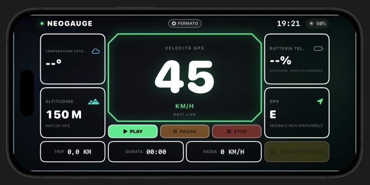
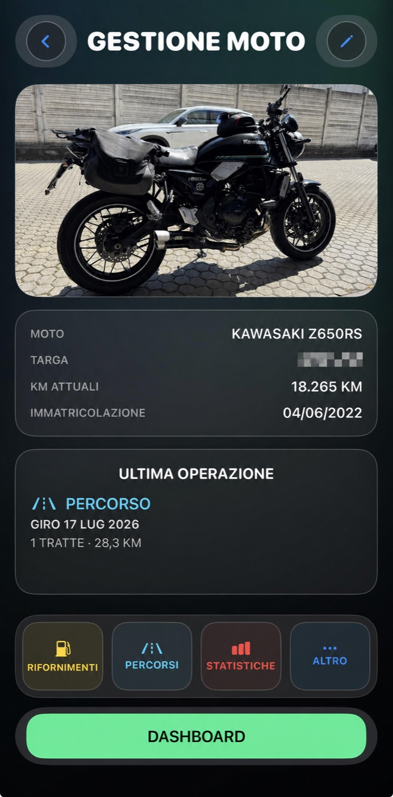
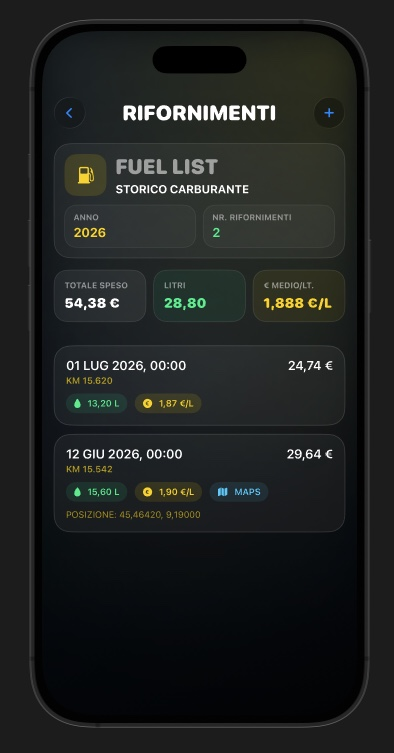
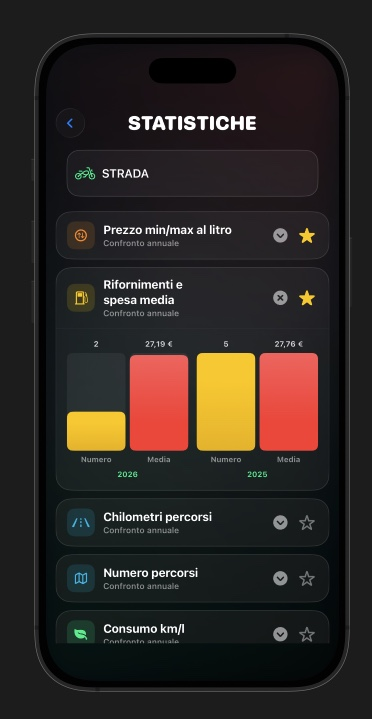
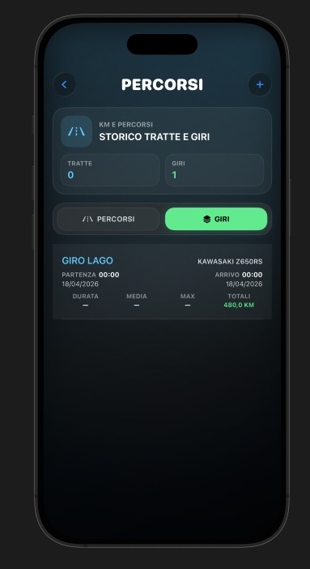
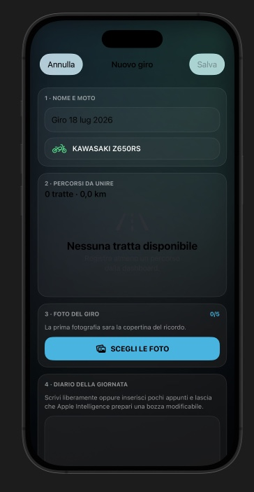

Dati live
Velocità GPS, temperatura esterna, altitudine e direzione in formato digitale.
NeoGauge per iPhone
L'iPhone affianca la strumentazione della moto con dati digitali leggibili durante l'uso e raccoglie rifornimenti, statistiche e ricordi in un unico spazio.

Velocità GPS, temperatura esterna, altitudine e direzione in formato digitale.
Distanza, durata, media e comandi manuali direttamente nella Dashboard.
Rifornimenti, statistiche e diario restano disponibili anche quando non stai guidando.
Schermate reali
Queste sono schermate dell'app reale: nessun prototipo e nessuna funzione aggiunta soltanto per il sito.





Vuoi vedere l'altra interfaccia?